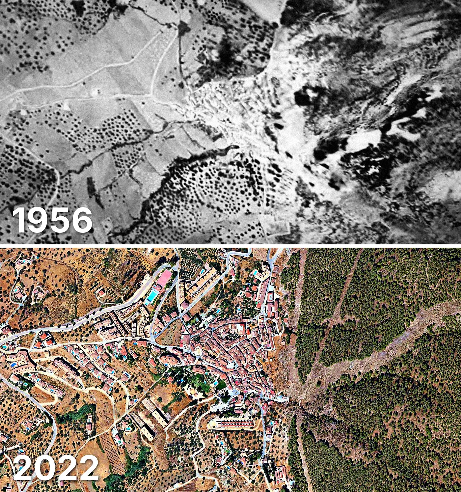

Alcaucín
Alcaucín tiene 1.935 edificios y 2.376 viviendas, y 2.671 habitantes en 2025. La mitad de sus edificios es de 1998 o posterior.
Cuándo se construyeron sus edificios
Desde 2015 se han terminado 19 edificios.

Las calles de Alcaucín con más viviendas
- Calle Buenavista · 104 viviendas
- Calle el Olivar de Buenavista · 88 viviendas
- Calle Cruce de Don Manuel · 86 viviendas
- Calle Carril del Alcázar · 67 viviendas
- Calle Venta Baja · 66 viviendas
- Calle Carrión · 55 viviendas
- Calle Altos de Alcaucín · 50 viviendas
- Paseo las Barriadas · 38 viviendas
- Pago Castillo de Salia · 37 viviendas
Toda la información de Alcaucín en CASAS.ES →
Fotos de Alcaucín para publicar
Estas fotos aéreas de Alcaucín, de 1956 y de 2022, se pueden publicar gratis en un periódico, un blog, la web del ayuntamiento o las redes, citando la fuente como se indica debajo.

Descargar: las dos juntas · 1956 · 2022 (JPG, 1.400 px de ancho)


Texto listo para publicar
Alcaucín desde el aire: así era en 1956 y así es en 2022
Las dos fotos muestran el mismo encuadre de Alcaucín con 66 años de diferencia: arriba, el Vuelo Americano de 1956; abajo, la foto aérea del PNOA de septiembre de 2022. Hoy Alcaucín tiene 1.935 edificios y 2.376 viviendas, y 2.671 habitantes en 2025. La mitad de sus edificios es de 1998 o posterior. El 46 % de sus edificios se ha levantado desde el año 2000.
Más datos de Alcaucín en CASAS.ES: casas.es/malaga/alcaucin
Cita para copiar
Fotos: Vuelo Americano Serie B (1956-57) y PNOA 2022, cedidos por © Instituto Geográfico Nacional (CC BY 4.0, scne.es). Datos y composición: <a href="https://casas.es/malaga/alcaucin/">los datos de Alcaucín en CASAS.ES</a>Descarga: municipios (CSV) · calles (CSV) · Wikidata (Q13155) · cómo usarlos en Python (dev.to) · también en OSF, Figshare y B2SHARE